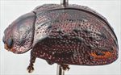
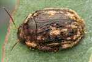
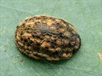
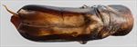
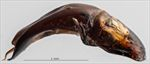
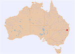

Click on images to enlarge
_SM.jpg){kind=link}

Male, Jenners Ck, Mt Lindsay Rd, NE New South Wales


Male, Jenners Ck, Mt Lindsay Rd, NE New South Wales


Male, Jenners Ck, Mt Lindsay Rd, NE New South Wales


Aedeagus, dorsal view (Jenners Ck, N.E. New South Wales)


Aedeagus, lateral view (Jenners Ck, N.E. New South Wales)


Distribution
Name
Trachymela sp. Ta219
Reference specimen
2020-248, Mt Lindsay Rd, Jenners Ck, NE New South Wales.
Adult Description
Length: ♂ 7.5–8.7 mm (n=5), ♀ 8.5–9.3 mm (n=3).
Colouration:
- Head: uniformly mid- to dark-brown or clypeus partially or, more rarely, fully black, area around antennal insertions sometimes black; labrum mostly black, usually with brown borders, mandibles brown with black tips; antennomeres 1–2 light to mid-brown, 3 partially black, 4–11 black.
- Pronotum: brown, concolorous with head, with two black patches present on each side, the larger one is close to the centre and usually roughly oval in shape, frequently extended towards the posterior margin from its lateral edge, the smaller one is circular and situated behind eye, frequently a longitudinally oriented black line is present in middle of disc, sometimes transverse black lines link some or all of these markings.
- Scutellum: black, rarely slightly paler.
- Elytra: brown, concolorous with pronotum, with many raised black verrucae, mostly round or slightly extended longitudinally, as well as one or more longitudinally extended black ridges, many of these are arranged within rows VR3, VR5 and VR7, though some black verrucae are scattered in intermediate rows, the most prominent ridge is the anterior section of VR3 and it usually extends to a little past the middle of disc, usually only briefly interrupted at the antero-median depression; an elongate black raised area is present in marginal area directly below antero-median depression; punctures are similar or fractionally darker than interstices, the elytral suture is narrowly bordered in black; humeral callus black.
- Venter & Legs: completely black, rarely tending dark-brown at lateral extremes, inside surface of elytral epipleura at least partially black.
- Cuticular Wax: orange-brown or light-greyish brown, sometimes with both shades present, coverage is very uneven with wax concentrated in 3 or 4 longitudinal bands on the elytra running between VR1 and VR3, VR3 and VR5, roughly along margin of disc and within marginal area, some of these bands may continue onto the pronotum, though usually less densely, within the bands patches of very thick wax may alternate with thinner patches; the density of wax in the area straddling the elytral suture between the ridges VR3, from the scutellum to just past elytral summit, is often noticeably less than elsewhere, sometimes almost devoid of cuticular wax.
Morphology:
- Shape: body rather flattened, greatest height viewed laterally is a little anterior to middle of elytral margin.
- Head: punctures moderately sized (pd ≈ 1.5–2×ef), evenly and densely distributed. Antennae short (AL/BL: ♂ 36–38%, ♀ 33–35%), filiform.
- Pronotum: almost evenly curved transversely to near lateral margin where it is slightly explanate, foveal depression very shallow or absent with a clearly defined and almost round elevated area in middle, discal surface smooth or slightly uneven, with a distinct elevation on each side just behind inside edge of eye, puncturation sometimes clearly impressed, more often indistinct, quite evenly and moderately densely distributed in discal area, similar or slightly smaller than those on head, becoming coarser from discal margins to lateral margins. Front margins join lateral margins in a smoothly rounded right-angle, with lateral margin curving smoothly and gradually towards rear margin, increasing in thickness in posterior half.
- Scutellum: smooth and unpunctured.
- Elytra: surface evenly curved transversely, lightly curved longitudinally in anterior portion with curvature increasing noticeably in posterior third, antero-median depression distinct but shallow, punctures moderately large and distinct and relatively evenly distributed between the prominent verrucae, verrucae are black and their distribution and form is described in the colour section above, elytral suture not or very slightly carinate, lateral margin almost straight or slightly oblique anteriorly, surface somewhat discontinuous under humeral callus. Vertical extension of epipleura moderate (HCE/PW = 0.30–0.33).
- Venter: prosternal process narrowest anteriorly, less often almost parallel-sided (but see note below), closed anteriorly, short setae sparsely or sometimes more densely distributed over prosternal process and mesoventrite, a single seta on anterior and median trochanter; front edge of metaventrite beveled, truncate.
Male Genitalia (Aedeagus):
- Dimensions: short (LPE = 26–29% BL).
- Dorsal view: shaft almost parallel-sided for some distance anteriorly from basal sulcus, then broadening very slightly to considerably before sides converge towards apex, initially in a smooth arc and finally in straight lines to form a relatively long triangular spatula terminated by a slightly or broadly truncate tip, dorsal surface lightly sclerotized with faint dorso-median channel and well defined dorsolateral channels present adjacent to ostium; ostium much longer than wide, ostial processes extend to spatula.
- Lateral view: shaft quite evenly and gently curved throughout basal and central section, then curved downwards noticeably in apical section, thinning towards apex over 15% of length, tip deflexed, flagellum moderately thick where it exits ostium.
Immature Stages
Unknown.
Similar species
- Ta18: a very similar species with a similar geographic distribution that differs in the form and distribution of the verrucae, among other things. Both species have some of these in the form of longitudinal ridges – in Ta18, VR2 contains the most extensive of these ridges, while in Ta219 it is VR3. Ta219 has a considerable number of isolated, round verrucae that are more elevated than the ridges – these are almost absent in Ta18. The black markings on the pronotum of Ta18 do not include a band along the centre line and the black markings on either side of the centre tend to be in the shape of a well-defined oval. The elytral suture of Ta18 is not black in its posterior half and the inner elytral epipleural surface very rarely tends towards black. The aedeagus of Ta18 is of similar shape and dimensions to that of typical Ta219 but is broader (viewed dorsally) and the spatula is less prominent. Ta18 seems restricted to stringybarks as hosts.
- Ta156:
- Ta234:
Notes
- Distribution & Abundance: Only a few specimens of this species have been collected, all from the New England Tablelands of northern New South Wales and southern Queensland.
- Host Associations: All but one specimen were found on either Eucalyptus nova-anglica or E. bridgesiana (both Symphyomyrtus : Maidenaria). A single female specimen from Giraween in south-eastern Queensland [2004-082] was found on E. melliodora (Symphyomyrtus : Adnataria), though there is some doubt about this host identification.
- Morphological Variation & Taxonomy: Provisionally, specimen [2004-082] from Giraween N.P., SE Queensland, is placed within Ta219, but it has some features that make it quite distinctive. Its prosternal process is expanded anteriorly (very similar to that in Ta83), the A–A antennal separation measure is well above that of other specimens of Ta219, and it is somewhat paler in ventral colour than typical Ta219, which are almost completely black.
Copyright © 2026. All rights reserved.